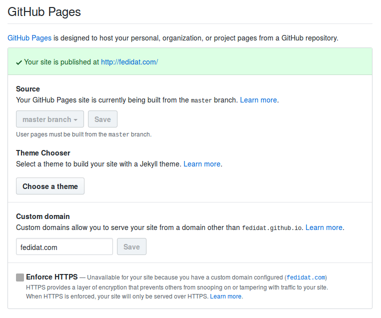
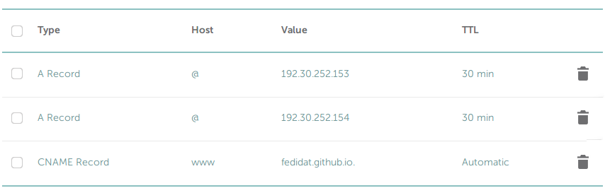

My experience with Pelican
- By Ben Fedidat
- Tue 24 October 2017
- Updated on Tue 31 October 2017
I just set up this website with Pelican, a static site generator, on Github Pages. It's rather easy to use, although it has its quirks. I'll walk you through the entire process.
First of all, if you're thinking about setting up a site with Pelican, you may want to think about alternatives. Notably, Jekyll builds on Ruby and it is very well supported by Github itself. Other choices include Octopress (originally built onto Jekyll to add features and simplicity, now a framework of its own), Hexo (NodeJS) or Hugo (Golang).
Ultimately, I chose Pelican because I have some experience with Python and thought this may ease the configuration and maintainance. If you would prefer something else, you can find static site generators for just about any (interpreted) language.
Either way, the language doesn't really matter. The point of a static site generator is to just write markup and have the site ready. But you may feel more confortable customizing some things like the theme in your language.
Keep in mind that if you feel like migrating to another static site generator, you just have to prepare the new boilerplate and migrate the content, which should be relatively painless. So whatever you choose, you can't go wrong.
Installing and setting up*
Basically, I started by installing Pelican using:
sudo apt-get install pelican
The official guide advises setting up a virtalenv and installing through pip but it will probably work fine for you without that.
After that, I started a new website with pelican-quickstart. This sets up the folder tree, as well as some files for the generator. Your folder will look like this:
yourproject/ ├── content │ └── (pages) ├── output ├── develop_server.sh ├── fabfile.py ├── Makefile ├── pelicanconf.py # Main settings file └── publishconf.py # Settings to use when ready to publish
Note in particular pelicanconf.py. This is the most important file and it controls just about every setting of your website, as we'll see later on.
Now, you should create content/pages/about.rst and write some hello world. Then, run make devserver in the project's root folder (this is a very handy script that regenerates your website after every change and keeps it deployed and serving). You should now be able to browse your site at http://localhost:8000/.
Format*
At this point, you will want to decide what kind of markup tool you want to use in order to write your articles. Pelican supports two formats:
- Markdown (.md): The consensus online seems to be that Markdown is well supported accross many platforms but is a loosely-defined standard. This may lead to some inconsistencies and quirks but an otherwise smoother experience.
- reStrcturedText, on the other hand, is a well-defined standard with one large implementation, Python Sphinx. It is however much less commonplace and sometimes more verbose, so you will find some missing features. Note that Python's own docutils use rST.
Ultimately, these criteria didn't matter to me so I went ahead with Pelican's default format, which is rST. For the moment.
Note that writing anything that the rST parser doesn't like in the markup may crash the make devserver, and you will have to run the command again after fixing the mistake, which is annoying.
You can find a more in-depth discussion of the subject of markup formats in Python here
Themes*
The default Pelican theme, simply named theme, looks alright, but not quite good. You can find many themes on the pelican-themes repo. I picked pelican-bootstrap, which is based on Twitter Bootstrap 3 and allows you to import thousands of Bootstrap themes.
Setting up a Pelican theme is simple: download it from Github, put it in a pelican-themes folder within the project root, then point to it from within pelicanconf.py using in this example:
THEME = "pelican-themes/pelican-bootstrap3"
Furthermore, because this theme supports internationalization (i18n), you have to enable the i18n Pelican plugin in pelicanconf.py, like so:
PLUGIN_PATHS = ['pelican-plugins']
PLUGINS = ['i18n_subsites']
JINJA_ENVIRONMENT = {
'extensions': ['jinja2.ext.i18n']
}
For the bootstrap-theme, pick one on one of the many websites featuring them, notably Bootswatch or StartBootstrap.
The themes on Bootswatch already come with pelican-bootstrap3, under static/css. You can apply any bootstrap-(theme).[min.].css by adding BOOTSTRAP_THEME = "darkly" to your pelicanconf.py.
Static files*
I recommend you create an additional folder named extra inside the content folder, where you will place files that you want to later transfer to specific locations within your site. This includes, among others:
- Favicons
- robots.txt
- CNAME if you use Github pages with a custom domain like me
- README.txt
You then have to specify each path in pelicanconf.py so that Pelican knows what to do with them, for example:
STATIC_PATHS = [
'images',
'extra/robots.txt'
]
EXTRA_PATH_METADATA = {
'extra/robots.txt': {'path': 'robots.txt'}
}
Disqus*
In order to generate the Disqus section at the bottom of each article, you must first have a Disqus account. You can open one that is free for personal use or organizations. Just try to do it before uploading, as it's rather annoying to have it load every time you refresh while writing.
After creating an account, specify DISQUS_SITENAME = '[site name]' in pelicanconf.py. That should do it (except if you use pelican-bootstrap3. It will probably not work and you will have to follow this).
Plugins*
Pelican has quite the variety of plugins. You can find a lot of them on the pelican-plugins repo. Notably editors, fields and various automation plugins.
Deploying to Github Pages*
Using Github Pages with Pelican is nice, and it's free.
First of all, you have to create the repo that will contain your website. Since you probably intend to use Github user pages, you have to create your user repo with the repo name "[Github user].github.io". Then you have to configure it under your repo's settings to use:
After that, anytime you want to deploy the output folder to your site, you may run these commands from the site root:
ghp-import output
git push -f git@github.com:[Github user]/[Github user].github.io.git gh-pages:master
This copies the output folder to the gh-pages branch, then pushes it to the master branch of your user pages repo.
Custom domain*
If you intend to use a custom domain, you must first direct it to your Github Pages:
Then you should enter your custom domain in your repo's settings, as shown above. Finally, you will need to create a file named CNAME which contains just your domain name, as Github's guide says. You can use a static file for this. Or you could install this plugin to automate it.